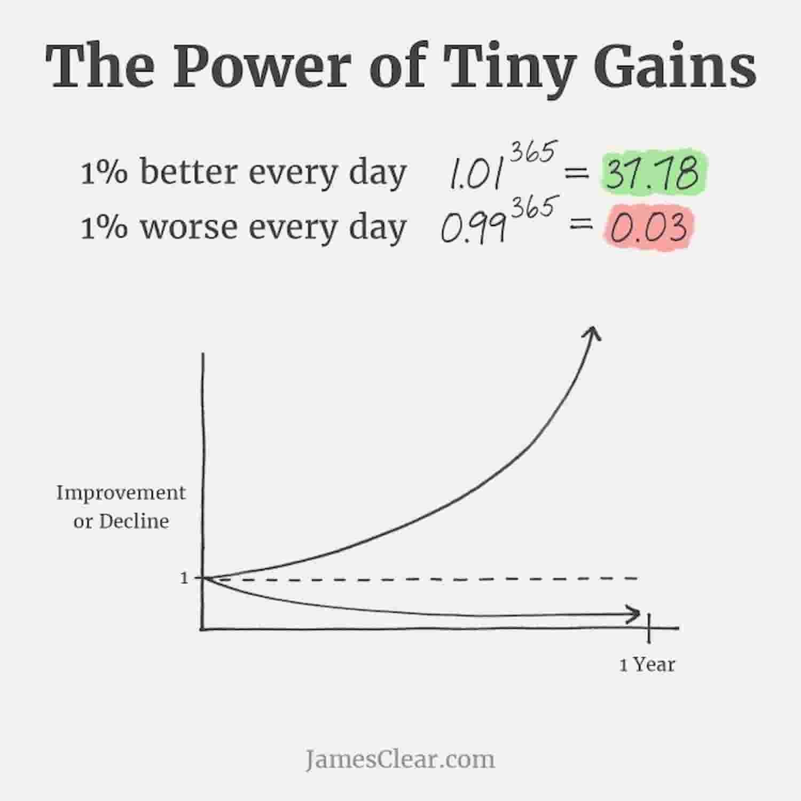

<!DOCTYPE html>
<html lang="en">
  <head>
    <meta charset="utf-8" />
    <meta name="viewport" content="width=device-width, initial-scale=1.0, maximum-scale=1.0, user-scalable=no" />

    <title></title>
    <link rel="stylesheet" href="dist/reveal.css" />
    <link rel="stylesheet" href="dist/theme/beige.css" id="theme" />
    <link rel="stylesheet" href="plugin/highlight/zenburn.css" />
	<link rel="stylesheet" href="css/layout.css" />
	<link rel="stylesheet" href="plugin/customcontrols/style.css">
	<link rel="stylesheet" href="plugin/chalkboard/style.css">


    <script defer src="dist/fontawesome/all.min.js"></script>

	<script type="text/javascript">
		var forgetPop = true;
		function onPopState(event) {
			if(forgetPop){
				forgetPop = false;
			} else {
				parent.postMessage(event.target.location.href, "app://obsidian.md");
			}
        }
		window.onpopstate = onPopState;
		window.onmessage = event => {
			if(event.data == "reload"){
				window.document.location.reload();
			}
			forgetPop = true;
		}

		function fitElements(){
			const itemsToFit = document.getElementsByClassName('fitText');
			for (const item in itemsToFit) {
				if (Object.hasOwnProperty.call(itemsToFit, item)) {
					var element = itemsToFit[item];
					fitElement(element,1, 1000);
					element.classList.remove('fitText');
				}
			}
		}

		function fitElement(element, start, end){

			let size = (end + start) / 2;
			element.style.fontSize = `${size}px`;

			if(Math.abs(start - end) < 1){
				while(element.scrollHeight > element.offsetHeight){
					size--;
					element.style.fontSize = `${size}px`;
				}
				return;
			}

			if(element.scrollHeight > element.offsetHeight){
				fitElement(element, start, size);
			} else {
				fitElement(element, size, end);
			}		
		}


		document.onreadystatechange = () => {
			fitElements();
			if (document.readyState === 'complete') {
				if (window.location.href.indexOf("?export") != -1){
					parent.postMessage(event.target.location.href, "app://obsidian.md");
				}
				if (window.location.href.indexOf("print-pdf") != -1){
					let stateCheck = setInterval(() => {
						clearInterval(stateCheck);
						window.print();
					}, 250);
				}
			}
	};


        </script>
  </head>
  <body>
    <div class="reveal">
      <div class="slides"><section  data-markdown><script type="text/template"><!-- .slide: class="drop" data-background-image="Adjuntos/slides.eap.portada.png" -->
<div class="" style="position: absolute; left: 0px; top: 0px; height: 700px; width: 960px; min-height: 700px; display: flex; flex-direction: column; align-items: center; justify-content: center" absolute="true">

# Springboot
## Nivel Medio
</div></script></section><section  data-markdown><script type="text/template"><!-- .slide: class="drop" data-background-image="Adjuntos/slides.eap.png" -->
<div class="" style="position: absolute; left: 0px; top: 0px; height: 700px; width: 960px; min-height: 700px; display: flex; flex-direction: column; align-items: center; justify-content: center" absolute="true">

# Raul Tierno
## @raultm
### ¿Quién soy?
</div></script></section><section  data-markdown><script type="text/template"><!-- .slide: class="drop" -->
<div class="" style="position: absolute; left: 0px; top: 0px; height: 700px; width: 960px; min-height: 700px; display: flex; flex-direction: column; align-items: center; justify-content: center" absolute="true">

# Desarrollador

## Junta de Extremadura
</div>

<aside class="notes"><p>Terminé la carrera en Sevilla en 2009 y desde entonces trabajando con máquinas.</p>
<p>Desarrollador/Sysadmin
PHP, Cake, android, Java, javascript, Laravel, linux, macos,</p>
<p>Profe
Android, Laravel y ahora parece que Java</p>
<!-- .slide: data-background-image="Adjuntos/slides.eap.png" --></aside></script></section><section  data-markdown><script type="text/template"><!-- .slide: class="drop" -->
<div class="" style="position: absolute; left: 0px; top: 0px; height: 700px; width: 960px; min-height: 700px; display: flex; flex-direction: column; align-items: center; justify-content: center" absolute="true">

# Curso

- Springboot (Medio - Repaso Básico)
- Visual Studio Code (VS Code)
- Desarrollo Proyectos (Adaptación Junta Extremadura)
- Teórico y Práctico
- Conceptos con asociaciones del mundo real
</div>

<aside class="notes"><p>Me gusta mucho buscar asociaciones de conceptos complejos con cosas del mundo real, casi siempre que no puedo encontrar el ejemplo concreto muchas veces es porque no entiendo el concepto realmente.</p>
<p>Si veis algun concepto complejo y no he dado ejemplo asociado preguntadlo e intentamos sacarlo. Comprender un concepto es tambien poder exportarlo a otra situacion o explicarlo en detalle</p>
<!-- .slide: data-background-image="Adjuntos/slides.eap.png" --></aside></script></section><section  data-markdown><script type="text/template"><!-- .slide: class="drop" -->
<div class="" style="position: absolute; left: 0px; top: 0px; height: 700px; width: 960px; min-height: 700px; display: flex; flex-direction: column; align-items: center; justify-content: center" absolute="true">

# Índice
## Reorganizacion
</div>

<aside class="notes"><p>Vamos a ver la ficha que se publicó y la reorganización que he creado para esta semana</p>
<!-- .slide: data-background-image="Adjuntos/slides.eap.png" --></aside></script></section><section  data-markdown><script type="text/template"><!-- .slide: class="drop" data-background-image="Adjuntos/slides.eap.png" -->
<div class="" style="position: absolute; left: 0px; top: 0px; height: 700px; width: 960px; min-height: 700px; display: flex; flex-direction: column; align-items: center; justify-content: center" absolute="true">

# Ficha

http://eap.juntaex.es/formacion/item/2024-00-s-007
</div></script></section><section  data-markdown><script type="text/template"><!-- .slide: class="drop" data-background-image="Adjuntos/slides.eap.png" -->
<div class="" style="position: absolute; left: 0px; top: 0px; height: 700px; width: 960px; min-height: 700px; display: flex; flex-direction: column; align-items: center; justify-content: center" absolute="true">

1. 👋 Intro
2. 👩‍💻Repaso y Practica Curso Básico
3. 📚(2) Openapi
4. ⚙️(5) Configuración
5. 📝(6) Logging
6. 👮🏽‍♀️(1) Auth
7. 🗂️FlyWay 
8. 🚀(4) Despliegue 
9. 🧭Resumen
10. ✅(3) Testing - ¿2 dias?
</div></script></section><section  data-markdown><script type="text/template"><!-- .slide: class="drop" -->
<div class="" style="position: absolute; left: 0px; top: 0px; height: 700px; width: 960px; min-height: 700px; display: flex; flex-direction: column; align-items: center; justify-content: center" absolute="true">

# Disclaimers

## Características De Clases
</div>

<aside class="notes"><p>voy a intentar explicar cuales son los pilares básicos en los que pienso cuando preparo contenido para clases</p>
<!-- .slide: data-background-image="Adjuntos/slides.eap.png" --></aside></script></section><section  data-markdown><script type="text/template"><!-- .slide: class="drop" data-background-image="Adjuntos/slides.techjargon.webp" -->
<div class="" style="position: absolute; left: 0px; top: 0px; height: 700px; width: 960px; min-height: 700px; display: flex; flex-direction: column; align-items: center; justify-content: center" absolute="true">


</div></script></section><section  data-markdown><script type="text/template"><!-- .slide: class="drop" -->
<div class="" style="position: absolute; left: 0px; top: 0px; height: 700px; width: 960px; min-height: 700px; display: flex; flex-direction: column; align-items: center; justify-content: center" absolute="true">

# Jerga Técnica

## Reducción a la necesaria
</div>

<aside class="notes"><p>preguntar si alguien tuvo algun problema de compresión por el uso de la jerga</p>
<p>Cuando hay algun término usado intento dejarlo claro con palabras entendibles</p>
<!-- .slide: data-background-image="Adjuntos/slides.eap.png" --></aside></script></section><section  data-markdown><script type="text/template"><!-- .slide: class="drop" data-background-image="Adjuntos/slides.dogmatism.1920.jpg" -->
<div class="" style="position: absolute; left: 0px; top: 0px; height: 700px; width: 960px; min-height: 700px; display: flex; flex-direction: column; align-items: center; justify-content: center" absolute="true">


</div></script></section><section  data-markdown><script type="text/template"><!-- .slide: class="drop" -->
<div class="" style="position: absolute; left: 0px; top: 0px; height: 700px; width: 960px; min-height: 700px; display: flex; flex-direction: column; align-items: center; justify-content: center" absolute="true">

# No Dogmatismos
</div>

<aside class="notes"><p>No soy nada dogmatico, una cosa es que evangelice algunas cosas, lo veremos mas adelante pero otra cosa es que yo diga que ALGO se LO BUENO y todo lo que no sea eso sea LO MALO, muchas cuestiones por temas de contexto</p>
<p>Ejemplo de FTP y Git, uso git y siempre voy a recomendar el uso de un control de versiones. ¿Alguien está haciendo uso de FTP para subir actulizaciones en su software? Jamás me escuchareis decir que eso está mal, hay que conocer el contexto, como mucho podré preguntar si han evaluado usar control de versiones.</p>
<!-- .slide: data-background-image="Adjuntos/slides.eap.png" --></aside></script></section><section  data-markdown><script type="text/template"><!-- .slide: class="drop" -->
<div class="" style="position: absolute; left: 0px; top: 0px; height: 700px; width: 960px; min-height: 700px; display: flex; flex-direction: column; align-items: center; justify-content: center" absolute="true">

# Cosas Esenciales

## Poco tiempo y muchas cosas explicables
</div>

<aside class="notes"><p>en este curso de nivel medio abarcamos muchos mas temas.</p>
<p>Voy a intentar restringir a cosas que me parecen interesantes, en cualquiera de los apartados que vamos a ver se podría ampliar documentación para rellenar los 5 dias. Así que siendo pragmático voy a dar lo que me parece relevante de cada apartado.</p>
<!-- .slide: data-background-image="Adjuntos/slides.eap.png" --></aside></script></section><section  data-markdown><script type="text/template"><!-- .slide: class="drop" -->
<div class="" style="position: absolute; left: 0px; top: 0px; height: 700px; width: 960px; min-height: 700px; display: flex; flex-direction: column; align-items: center; justify-content: center" absolute="true">

# Conceptos
</div>

<aside class="notes"><p>Durante el curso vamos a tratar ciertos temas y quiero aclararlos antes de seguir</p>
<!-- .slide: data-background-image="Adjuntos/slides.eap.png" --></aside></script></section><section  data-markdown><script type="text/template"><!-- .slide: class="drop" data-background-image="Adjuntos/slides.topdownbottomup.webp" -->
<div class="" style="position: absolute; left: 0px; top: 0px; height: 700px; width: 960px; min-height: 700px; display: flex; flex-direction: column; align-items: center; justify-content: center" absolute="true">


</div></script></section><section  data-markdown><script type="text/template"><!-- .slide: class="drop" data-background-image="Adjuntos/slides.eap.png" -->
<div class="" style="position: absolute; left: 0px; top: 0px; height: 700px; width: 960px; min-height: 700px; display: flex; flex-direction: column; align-items: center; justify-content: center" absolute="true">

# Top down

## vs
# Bottom up
</div></script></section><section  data-markdown><script type="text/template"><!-- .slide: class="drop" data-background-image="Adjuntos/slides.tech_evangelist.jpg" -->
<div class="" style="position: absolute; left: 0px; top: 0px; height: 700px; width: 960px; min-height: 700px; display: flex; flex-direction: column; align-items: center; justify-content: center" absolute="true">


</div></script></section><section  data-markdown><script type="text/template"><!-- .slide: class="drop" -->
<div class="" style="position: absolute; left: 0px; top: 0px; height: 700px; width: 960px; min-height: 700px; display: flex; flex-direction: column; align-items: center; justify-content: center" absolute="true">

# Herramientas 
## 3 Fases

- &shy;<!-- .element: class="fragment" data-fragment-index="1" -->Resistencia
- &shy;<!-- .element: class="fragment" data-fragment-index="2" -->Abrumado
- &shy;<!-- .element: class="fragment" data-fragment-index="3" -->Predicador
</div>

<aside class="notes"><p>herramientas que en un primer momento no entendiamos sus razones y ahora no podriamos vivir sin ella</p>
<ul>
<li>Git</li>
<li>SOLID</li>
<li>Testing</li>
<li>Refactoring</li>
<li>Herramientas Modulares</li>
</ul>
<p>No meto aqui ningun framework concreto, son mas temporales, van y vienen con las tendencias</p>
<p>referencia: Jeffrey Way - Laravel Testing Tips, Techniques and Pitfalls</p>
<p>Resistence: Testing? huh? why bother?
Overwhelmed: What the hell do I test?
Evangelist: how did i get by without this?</p>
<!-- .slide: data-background-image="Adjuntos/slides.eap.png" --></aside></script></section><section  data-markdown><script type="text/template"><!-- .slide: class="drop" data-background-image="Adjuntos/slides.modular_tools.jpg" -->
<div class="" style="position: absolute; left: 0px; top: 0px; height: 700px; width: 960px; min-height: 700px; display: flex; flex-direction: column; align-items: center; justify-content: center" absolute="true">


</div></script></section><section  data-markdown><script type="text/template"><!-- .slide: class="drop" -->
<div class="" style="position: absolute; left: 0px; top: 0px; height: 700px; width: 960px; min-height: 700px; display: flex; flex-direction: column; align-items: center; justify-content: center" absolute="true">

# Herramientas Modulares
</div>

<aside class="notes"><p>S de principios SOLID, ayudan el reuso, interaccion entre diferentes desarrolladores sin conocerse. Hacer una cosa muy bien y confiar.</p>
<ul>
<li>UNIX (Linux/MacOS)</li>
<li>Gestión de paquetes (PHP-Composer, Javascript-NPM, Ruby-gems)</li>
<li>Vs Code y Plugins</li>
<li>Obsidian</li>
</ul>
<p>Al final las herramientas que admiten plugins suelen se mas usadas por las posibilidad de customización que aportan.</p>
<!-- .slide: data-background-image="Adjuntos/slides.eap.png" --></aside></script></section><section  data-markdown><script type="text/template"><!-- .slide: class="drop" data-background-image="Adjuntos/slides.eap.png" -->
<div class="" style="position: absolute; left: 0px; top: 0px; height: 700px; width: 960px; min-height: 700px; display: flex; flex-direction: column; align-items: center; justify-content: center" absolute="true">

# Interés compuesto
</div></script></section><section  data-markdown><script type="text/template"><!-- .slide: class="drop" data-background-image="Adjuntos/slides.eap.png" -->
<div class="" style="position: absolute; left: 0px; top: 0px; height: 700px; width: 960px; min-height: 700px; display: flex; flex-direction: column; align-items: center; justify-content: center" absolute="true">

## Economia/Inversiones


</div></script></section><section  data-markdown><script type="text/template"><!-- .slide: class="drop" -->
<div class="" style="position: absolute; left: 0px; top: 0px; height: 700px; width: 960px; min-height: 700px; display: flex; flex-direction: column; align-items: center; justify-content: center" absolute="true">

## Hábitos


</div>

<aside class="notes"><p>habitos atomicos</p>
<!-- .slide: data-background-image="Adjuntos/slides.eap.png" --></aside></script></section><section  data-markdown><script type="text/template"><!-- .slide: class="drop" -->
<div class="" style="position: absolute; left: 0px; top: 0px; height: 700px; width: 960px; min-height: 700px; display: flex; flex-direction: column; align-items: center; justify-content: center" absolute="true">

## Filosofía


</div>

<aside class="notes"><p>CAmbios cuantitativos y cambios cualitativos</p>
<p>Agua caletandose hasta que empieza cambio de estado</p>
<p>Cambios sociales, no se pasa de 0 a revolucion, hay una serie de pasos. Materialismo Dialectico</p>
<p>Como aplica a desarrollo?
Cualquiera puede hacer una api rest</p>
<p>Pero hacer una api</p>
<ul>
<li>conociendo http rfc2616 1999 2068 en 97</li>
<li>entendiendo status y verbos</li>
<li>Openapi</li>
<li>Comprendiendo necesidades/problemas de front </li>
<li>Usando convenciones creadas por gentes más listas que nosotros</li>
<li>Todas estas cosas conjuntas hacen que nuestra api más usable, facilidad de manteniendo, capacidad de extensibilidad</li>
</ul>
<p><a href="https://www.rfc-editor.org/info/rfc2068">https://www.rfc-editor.org/info/rfc2068</a></p>
<p>Si conoces </p>
<ul>
<li>git, comprendiendo ramas, tags y trabajo colaborativo</li>
<li>Sabes comandos básicos de Linux o terminal</li>
<li>Tienes unos pocos conceptos de docker</li>
<li>Entender CI/CD es trivial y potente en tu día a día y el ahorro de tiempo bestial</li>
</ul>
<!-- .slide: data-background-image="Adjuntos/slides.eap.png" --></aside></script></section><section  data-markdown><script type="text/template"><!-- .slide: class="drop" -->
<div class="" style="position: absolute; left: 0px; top: 0px; height: 700px; width: 960px; min-height: 700px; display: flex; flex-direction: column; align-items: center; justify-content: center" absolute="true">

# I ❤️‍🔥 Development
</div>

<aside class="notes"><p>Me encanta el desarrollo</p>
<!-- .slide: data-background-image="Adjuntos/slides.eap.png" --></aside></script></section><section  data-markdown><script type="text/template"><!-- .slide: class="drop" -->
<div class="" style="position: absolute; left: 0px; top: 0px; height: 700px; width: 960px; min-height: 700px; display: flex; flex-direction: column; align-items: center; justify-content: center" absolute="true">

# Resolver problemas
</div>

<aside class="notes"><p>como si fuese un puzzle</p>
<!-- .slide: data-background-image="Adjuntos/slides.eap.png" --></aside></script></section><section  data-markdown><script type="text/template"><!-- .slide: class="drop" -->
<div class="" style="position: absolute; left: 0px; top: 0px; height: 700px; width: 960px; min-height: 700px; display: flex; flex-direction: column; align-items: center; justify-content: center" absolute="true">

# Software usable
</div>

<aside class="notes"><p>me gusta ver que lo que hago repercute en hacer mejor el trabajo o la vida de otra persona</p>
<!-- .slide: data-background-image="Adjuntos/slides.eap.png" --></aside></script></section><section  data-markdown><script type="text/template"><!-- .slide: class="drop" -->
<div class="" style="position: absolute; left: 0px; top: 0px; height: 700px; width: 960px; min-height: 700px; display: flex; flex-direction: column; align-items: center; justify-content: center" absolute="true">

# Trabajo útil
</div>

<aside class="notes"><p>Sentir que mi trabajo resulta productivo, además trabajando en un administración esto puede llegar a ser mucho mas impactante.</p>
<!-- .slide: data-background-image="Adjuntos/slides.eap.png" --></aside></script></section><section  data-markdown><script type="text/template"><!-- .slide: class="drop" data-background-image="Adjuntos/slides.eap.png" -->
<div class="" style="position: absolute; left: 0px; top: 0px; height: 700px; width: 960px; min-height: 700px; display: flex; flex-direction: column; align-items: center; justify-content: center" absolute="true">

# 💔
</div></script></section><section  data-markdown><script type="text/template"><!-- .slide: class="drop" -->
<div class="" style="position: absolute; left: 0px; top: 0px; height: 700px; width: 960px; min-height: 700px; display: flex; flex-direction: column; align-items: center; justify-content: center" absolute="true">

# Incidencias recurrentes
</div>

<aside class="notes"><p>cuanod un bug reaparece constantemente y no consigo exterminarlo</p>
<!-- .slide: data-background-image="Adjuntos/slides.eap.png" --></aside></script></section><section  data-markdown><script type="text/template"><!-- .slide: class="drop" -->
<div class="" style="position: absolute; left: 0px; top: 0px; height: 700px; width: 960px; min-height: 700px; display: flex; flex-direction: column; align-items: center; justify-content: center" absolute="true">

# Lidiar con frustración usuarios
</div>

<aside class="notes"><p>cuando el usuario en vez de disfrutar con el software le supone un dolor usarlo</p>
<ul>
<li>probar que hace lo que tiene que hacer</li>
<li>monitorizar que los tiempos son buenos</li>
</ul>
<!-- .slide: data-background-image="Adjuntos/slides.eap.png" --></aside></script></section><section  data-markdown><script type="text/template"><!-- .slide: class="drop" -->
<div class="" style="position: absolute; left: 0px; top: 0px; height: 700px; width: 960px; min-height: 700px; display: flex; flex-direction: column; align-items: center; justify-content: center" absolute="true">

# ¿Problemas Principales del desarrollador?
</div>

<aside class="notes"><p>pueden comentar varios</p>
<ul>
<li>recoger requisitos</li>
<li>gestionar elementos externos (Base de datos, configuraciones, Navegadores y sus implementaciones, sistemas)</li>
<li>mantenimiento</li>
</ul>
<!-- .slide: data-background-image="Adjuntos/slides.eap.png" --></aside></script></section><section  data-markdown><script type="text/template"><!-- .slide: class="drop" -->
<div class="" style="position: absolute; left: 0px; top: 0px; height: 700px; width: 960px; min-height: 700px; display: flex; flex-direction: column; align-items: center; justify-content: center" absolute="true">

# Mantenimiento
</div>

<aside class="notes"><p>la mayor parte de nuestro tiempo como desarrolladores no se va a desarrollar nuevo codigo o pensar soluciones, va para modificar codigo ya existente por nuevas funcionalidades o por bugs.</p>
<!-- .slide: data-background-image="Adjuntos/slides.eap.png" --></aside></script></section><section  data-markdown><script type="text/template"><!-- .slide: class="drop" data-background-image="Adjuntos/slides.eap.png" -->
<div class="" style="position: absolute; left: 0px; top: 0px; height: 700px; width: 960px; min-height: 700px; display: flex; flex-direction: column; align-items: center; justify-content: center" absolute="true">

## Código que <mark>no escribamos </mark>

## Código que <mark>no hay que mantener</mark>
</div></script></section><section  data-markdown><script type="text/template"><!-- .slide: class="drop" data-background-image="Adjuntos/slides.eap.png" -->
<div class="" style="position: absolute; left: 0px; top: 0px; height: 700px; width: 960px; min-height: 700px; display: flex; flex-direction: column; align-items: center; justify-content: center" absolute="true">

# Requisitos

- &shy;<!-- .element: class="fragment" data-fragment-index="1" -->cliente al desarrollador
- &shy;<!-- .element: class="fragment" data-fragment-index="2" -->desarrollador al ordenador
</div></script></section><section  data-markdown><script type="text/template"><!-- .slide: class="drop" -->
<div class="" style="position: absolute; left: 0px; top: 0px; height: 700px; width: 960px; min-height: 700px; display: flex; flex-direction: column; align-items: center; justify-content: center" absolute="true">

# [Exact Instruction Challenge](https://www.youtube.com/watch?v=cDA3_5982h8)
</div>

<aside class="notes"><p>video sobre lo complicado que es dar instrucciones directas.</p>
<p>Muy divertido hacerlo con niños</p>
<!-- .slide: data-background-image="Adjuntos/slides.eap.png" --></aside></script></section></div>
    </div>

    <script src="dist/reveal.js"></script>

    <script src="plugin/markdown/markdown.js"></script>
    <script src="plugin/highlight/highlight.js"></script>
    <script src="plugin/zoom/zoom.js"></script>
    <script src="plugin/notes/notes.js"></script>
    <script src="plugin/math/math.js"></script>
	<script src="plugin/mermaid/mermaid.js"></script>
	<script src="plugin/chart/chart.min.js"></script>
	<script src="plugin/chart/plugin.js"></script>
	<script src="plugin/customcontrols/plugin.js"></script>
	<script src="plugin/chalkboard/plugin.js"></script>

    <script>
      function extend() {
        var target = {};
        for (var i = 0; i < arguments.length; i++) {
          var source = arguments[i];
          for (var key in source) {
            if (source.hasOwnProperty(key)) {
              target[key] = source[key];
            }
          }
        }
        return target;
      }

	  function isLight(color) {
		let hex = color.replace('#', '');

		// convert #fff => #ffffff
		if(hex.length == 3){
			hex = `${hex[0]}${hex[0]}${hex[1]}${hex[1]}${hex[2]}${hex[2]}`;
		}

		const c_r = parseInt(hex.substr(0, 2), 16);
		const c_g = parseInt(hex.substr(2, 2), 16);
		const c_b = parseInt(hex.substr(4, 2), 16);
		const brightness = ((c_r * 299) + (c_g * 587) + (c_b * 114)) / 1000;
		return brightness > 155;
	}

	var bgColor = getComputedStyle(document.documentElement).getPropertyValue('--r-background-color').trim();
	var isLight = isLight(bgColor);

	if(isLight){
		document.body.classList.add('has-light-background');
	} else {
		document.body.classList.add('has-dark-background');
	}

      // default options to init reveal.js
      var defaultOptions = {
        controls: true,
        progress: true,
        history: true,
        center: true,
        transition: 'default', // none/fade/slide/convex/concave/zoom
        plugins: [
          RevealMarkdown,
          RevealHighlight,
          RevealZoom,
          RevealNotes,
          RevealMath.MathJax3,
		  RevealMermaid,
		  RevealChart,
		  RevealCustomControls,
		  RevealChalkboard, 
        ],


    	allottedTime: 120 * 1000,

		mathjax3: {
			mathjax: 'plugin/math/mathjax/tex-mml-chtml.js',
		},
		markdown: {
		  gfm: true,
		  mangle: true,
		  pedantic: false,
		  smartLists: false,
		  smartypants: false,
		},

		mermaid: {
			theme: isLight ? 'default' : 'dark',
		},

		customcontrols: {
			controls: [
				{ icon: '<i class="fa fa-pen-square"></i>',
				title: 'Toggle chalkboard (B)',
				action: 'RevealChalkboard.toggleChalkboard();'
				},
				{ icon: '<i class="fa fa-pen"></i>',
				title: 'Toggle notes canvas (C)',
				action: 'RevealChalkboard.toggleNotesCanvas();'
				},
			]
		},
      };

      // options from URL query string
      var queryOptions = Reveal().getQueryHash() || {};

      var options = extend(defaultOptions, {"width":960,"height":700,"margin":0.04,"controls":false,"progress":false,"slideNumber":false,"transition":"slide","transitionSpeed":"default"}, queryOptions);
    </script>

    <script>
      Reveal.initialize(options);
    </script>
  </body>

  <!-- created with Advanced Slides -->
</html>
